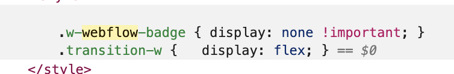
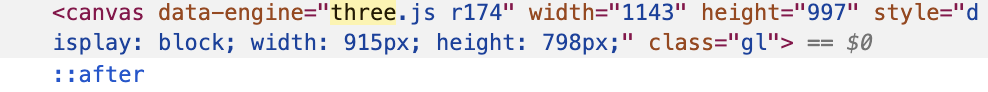
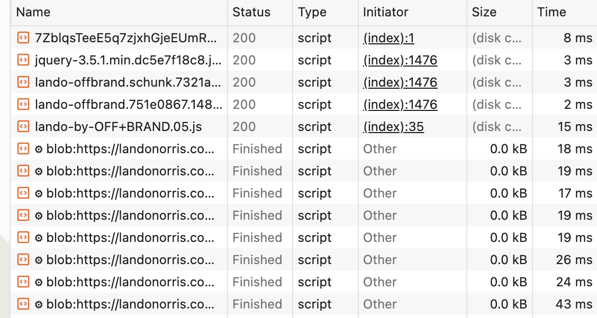
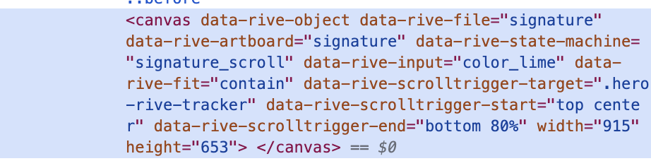

For this assignment, I investigated the official Lando Norris website to figure out how it was made.
I chose Lando Norris's website because I liked how interactive it felt. Instead of just displaying information, the website uses movement, scrolling, large typography, and animations throughout the page. I wanted to figure out what was happening behind these interactions and how they were made.
I started by opening Chrome's Inspector and looking through the HTML. Since I did not know exactly what I was looking for, I searched for names that might give me clues about how the website was built. One of the first things I searched for was "webflow."
I found a class called "w-webflow-badge" and also noticed that several assets were coming from "cdn.prod.website-files.com." This gave me my first clue that Webflow was involved in building the website.

Next, I searched for different JavaScript libraries that might be used on the website. When I searched for "three," I found a canvas element with "three.js r174" written in the code.
I learned that Three.js is a JavaScript library used to create and display 3D graphics in a web browser. Finding it helped me understand that some of the visual elements on the website are being rendered through a canvas rather than just regular HTML and CSS.

After looking through the HTML, I opened the Network tab in Chrome Inspector and filtered it to only show JavaScript files. I then reloaded the website to see what scripts were being loaded.
Here I found jQuery 3.5.1 as well as several JavaScript files with names specific to the website, including "lando-by-OFF+BRAND.05.js." This showed me that the website uses existing JavaScript libraries along with custom JavaScript.

One specific interaction I wanted to understand was the animated signature. I used the element selector in Chrome Inspector and clicked on the signature to see what was behind it.
I found that the signature is displayed inside a canvas and that the code references Rive. I also found a state machine called "signature_scroll" and attributes that specify where the scroll interaction starts and ends. From these clues, I figured out that the signature animation is connected to the user's scroll position.

Before inspecting the website, I mostly saw it as one complicated design. When I first opened the code, I was honestly even more lost because I didn't really know what I was looking at. But as I kept searching and started connecting different parts of the code to features I saw on the website, it became really interesting. I realized that the site is actually made from a lot of different tools working together. I found Webflow, Three.js, Lenis, Rive, jQuery, and custom JavaScript along the way.
The most interesting part for me was seeing how an interaction that looks simple on the screen, like the signature reacting to scrolling, can have several different pieces of code behind it.